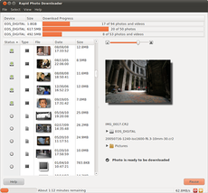
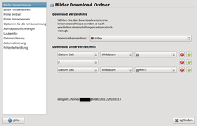

Rapid Photo Downloader
Dieser Artikel wurde für die folgenden Ubuntu-Versionen getestet:
Ubuntu 16.04 Xenial Xerus
Ubuntu 14.04 Trusty Tahr
Zum Verständnis dieses Artikels sind folgende Seiten hilfreich:
Rapid Photo Downloader  ist eine desktop-unabhängige Lösung, um Fotos von einer digitalen Kamera oder einem externen Datenträger bequem herunterzuladen. Entsprechende Basisroutinen sind zwar auch in lokalen Bildverwaltungen wie z.B. Shotwell oder F-Spot enthalten, aber vielleicht möchte man den Transfer von Bildern oder Videos von der Kamera auf den Computer unter Berücksichtigung spezieller Sonderwünsche selbst steuern. Das Programm unterstützt diesen Vorgang mit zahlreichen nützlichen Funktionen:
ist eine desktop-unabhängige Lösung, um Fotos von einer digitalen Kamera oder einem externen Datenträger bequem herunterzuladen. Entsprechende Basisroutinen sind zwar auch in lokalen Bildverwaltungen wie z.B. Shotwell oder F-Spot enthalten, aber vielleicht möchte man den Transfer von Bildern oder Videos von der Kamera auf den Computer unter Berücksichtigung spezieller Sonderwünsche selbst steuern. Das Programm unterstützt diesen Vorgang mit zahlreichen nützlichen Funktionen:
Bilder und Videos können verarbeitet werden
"sprechende" Datei- und Ordnernamen unter Berücksichtigung folgender Kriterien erzeugen:
Datum und Uhrzeit
 Import-Vorgang Metadaten wie Blende, Verschlusszeit und Codec
Reihenfolgen mit Buchstaben oder Zahlen
Übernahme von Elementen des Original-Dateinamens
freie Texteingabe
Job-Codes, die vor dem Herunterladen eingegeben werden
von mehreren Quellen gleichzeitig herunterladen
Datensicherung schon beim Herunterladen
Automatisierung sich wiederholender Aufgaben:
Start bei Erkennung bestimmter Hardware
Aushängen des Datenträgers nach dem Herunterladen
Beenden des Programms
Trotz des englisch klingenden Namens ist das Programm in über 20 verschiedenen Sprachen benutzbar. Es kann unter GNOME, KDE und anderen Desktop-Umgebungen wie Xfce und LXDE eingesetzt werden. Rapid Photo Downloader ist in Python erstellt und verwendet die Bibliothek Exiv2 (dadurch sind auch RAW-Formate möglich).
Installation¶
 Rapid Photo Downloader in den offiziellen Paketquellen enthalten. Folgendes Paket muss installiert werden [1]:
Rapid Photo Downloader in den offiziellen Paketquellen enthalten. Folgendes Paket muss installiert werden [1]:
rapid-photo-downloader (universe)
 mit apturl
mit apturl
Paketliste zum Kopieren:
sudo apt-get install rapid-photo-downloader
sudo aptitude install rapid-photo-downloader
PPA¶
Es kann eine aktuellere Version des Programms über ein "Personal Package Archiv" (PPA) [2] des Entwicklers installiert werden. In neueren Ubuntu-Versionen ist diese ggf. bereits enthalten.
Adresszeile zum Hinzufügen des PPAs:
ppa:dlynch3/ppa
Hinweis!
Zusätzliche Fremdquellen können das System gefährden.
Ein PPA unterstützt nicht zwangsläufig alle Ubuntu-Versionen. Weitere Informationen sind der  PPA-Beschreibung des Eigentümers/Teams dlynch3 zu entnehmen.
PPA-Beschreibung des Eigentümers/Teams dlynch3 zu entnehmen.
Damit Pakete aus dem PPA genutzt werden können, müssen die Paketquellen neu eingelesen werden.
Nach dem Aktualisieren der Paketquellen erfolgt die Installation wie oben angegeben.
Einstellungen¶
 Bevor man Rapid Photo Downloader praktisch einsetzt, sollte man sich zuerst Gedanken zu folgenden Punkten machen:
Bevor man Rapid Photo Downloader praktisch einsetzt, sollte man sich zuerst Gedanken zu folgenden Punkten machen:
Von wo sollen Fotos und Videos geladen werden?
Wie sollen Fotos und Videos umbenannt werden?
Wohin sollen Fotos und Videos gespeichert werden?
Ob und wie ein automatische Datensicherung (Backup) verwendet werden soll?
Wie sollen doppelte Dateinamen oder fehlende Speicherorte (externe Datenträger) behandelt werden?
Diese Kriterien werden dann über die Einstellungen entsprechend konfiguriert. Die Programmeinstellungen lassen sich über "Datei -> Einstellungen" oder Strg + P aufrufen. Diese sind in die folgenden Unterpunkte gegliedert:

Bilder Verzeichnisse (Standard: ~/Bilder/...)
Bilder Umbenennen
Filme Verzeichnisse (Standard: ~/Videos/...)
Filme Umbenennen
Optionen für die Umbenennung (u.a. mit anderen Betriebssystemen kompatible Dateinamen)
Laufwerke
Datensicherung
Automatisierung (z.B. Löschen der Originale vom Quelldatenträger nach erfolgreichem Import)
Fehlerbehandlung (Namenskonflikte bei Dateinamen lösen)
Weitere Erläuterungen und Beispiele finden sich in den einzelnen Unterpunkten.
Verwendung¶
Über "Grafik -> Rapid Photo Downloader" lässt sich das Programm bei Ubuntu-Varianten mit einem Anwendungsmenü starten [3].
Wenn nach dem Start des Programms eine Kamera oder ein externer Datenträger (automatisch) entdeckt wird, werden neben der Datenträgerbezeichnung kleine Vorschauen der enthaltenen Bilder angezeigt. Nun ist es möglich, entweder ein oder alle Bilder zu importieren. Wer mehrere (aber nicht alle) Bilder importieren möchte, wählt diese in Kombination mit der Taste Strg aus (Mehrfachselektion).
Auch eine Auftragsbezeichnung lässt sich vor dem Import angeben.
Auftragsbezeichnungen¶
Angenommen, auf einer Kamera sind Bilder enthalten, die in drei verschiedenen Städten aufgenommen wurden. Diese Bilder befinden sich aber nicht in einer chronologischen Reihenfolge (sind durcheinander). Dann lässt sich der Bildtransfer mit sog. "Job-Codes" vereinfachen. Man definiert beispielsweise drei Jobs ("Hamburg", "München", "Berlin") und weist den Bildern vor dem Importvorgang einfach den passenden Städtenamen zu. Einige internationale Städte sind bereits vordefiniert.
Dieses Verfahren erspart die nachträgliche Zuordnung der Bilder und lässt sich auch unter Berücksichtigung anderer Kriterien ("Hochzeiten", "Geburtstage" usw.) verwenden.
Hinweis:
Auftragsbezeichnungen funktionieren nicht alleine, sondern werden in der Praxis mit den Einstellungen zum Benennen der Bilder- oder Video-Ordner kombiniert.
Problembehebung¶
GVFS¶
Rapid Photo Downloader verwendet das GVFS sowie gPhoto2 zum Import der Bilder von der Kamera. Wenn Probleme beim Zusammenspiel dieser beiden Komponenten mit der eigenen Kamera auftreten, wird der Einsatz eines externen Cardreaders empfohlen. Als weiterer Vorteil ist der Bildtransfer dann 5-10 mal schneller als beim direkten Anschluss der Kamera und der Kamera-Akku wird nicht entleert.
Alternativen¶
Es existieren noch weitere Programme zum manuellen Import von einer digitalen Kamera:
exifotocopy - um Bilder/Fotos von einem externen Datenträger oder einer Digitalkamera auf ein anderes Speichermedium zu kopieren, zu skalieren und in eine Ordnerstruktur einzusortieren (Nautilus-Skript)
AmoK Exif Sorter - Bilder organisieren, sortieren und umbenennen (Java-basierend)
Links¶
FAQ
- Häufige Fragen und Antworten (unterstützte Bild- und Video-Formate)Documentation
- Handbuch
Rapid Photo Downloader mit neuen Funktionen
 - heise Open Source, 10/2013
- heise Open Source, 10/2013Bilder verwalten
 Übersichtsartikel
Übersichtsartikel
- Erstellt mit Inyoka
-
 2004 – 2017 ubuntuusers.de • Einige Rechte vorbehalten
2004 – 2017 ubuntuusers.de • Einige Rechte vorbehalten
Lizenz • Kontakt • Datenschutz • Impressum • Serverstatus -
Serverhousing gespendet von